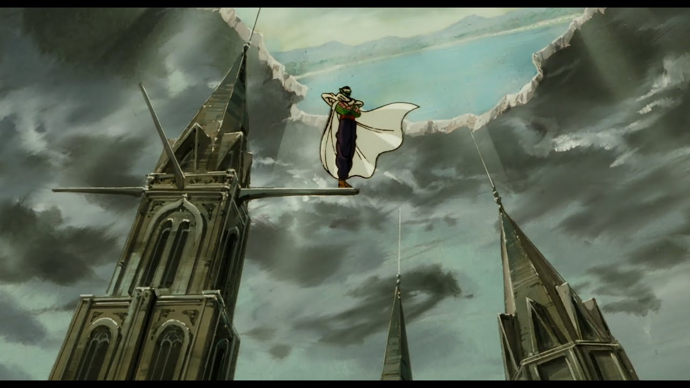

From One Piece, FullMetal Alchemist, to Bleach, anime has been a big part of culture around the world, bringing people together with anime of amazing storytelling and animation, but without Akira Toriyama, anime wouldn't have been as popular as it is now. Akira Toriyama being born on April 5th 1955 came to be one of the most influential authors in the history of anime itself, bringing Masterpieces like Dragon Ball, Dragon Ball Z, and Dragon Ball Super. His Inspiration of his work being from the story of "Journey Of The West" many of you might know it for one of its characters Son WuKong(Black Myth Wukong for you gamers). With the story Starting from a story about martial arts fighting and tournaments, to Aliens and Gods and all other types of fighters fighting each other. He also made another series called "Dr.slump", and illustrated the Dragon Quest games franchise. But in March 1st, 2024 Akira Toriyama died from a blood clot, now people still remember what Akira has done for the history of anime.
Since the success of Dragon Ball, Dragon Ball Z, and Dragon Ball Super, many movies and games have been made such as Dragon Ball Z:Cooler's revenge, Dragon Ball: Kakarot, Dragon Ball: Sparking zero,
This is Akira's self input into Dragon Ball since he didn't want to show poeple his face on the series, Tori-Bot
"Move well, study well, play well, eat well, rest well - That is the Turtle Master way!" -Akira Toriyama
